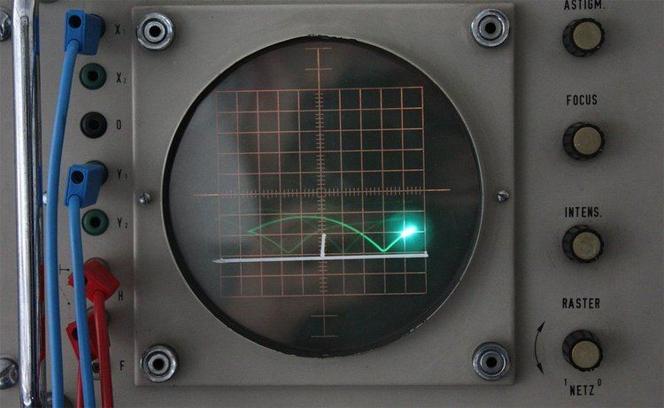
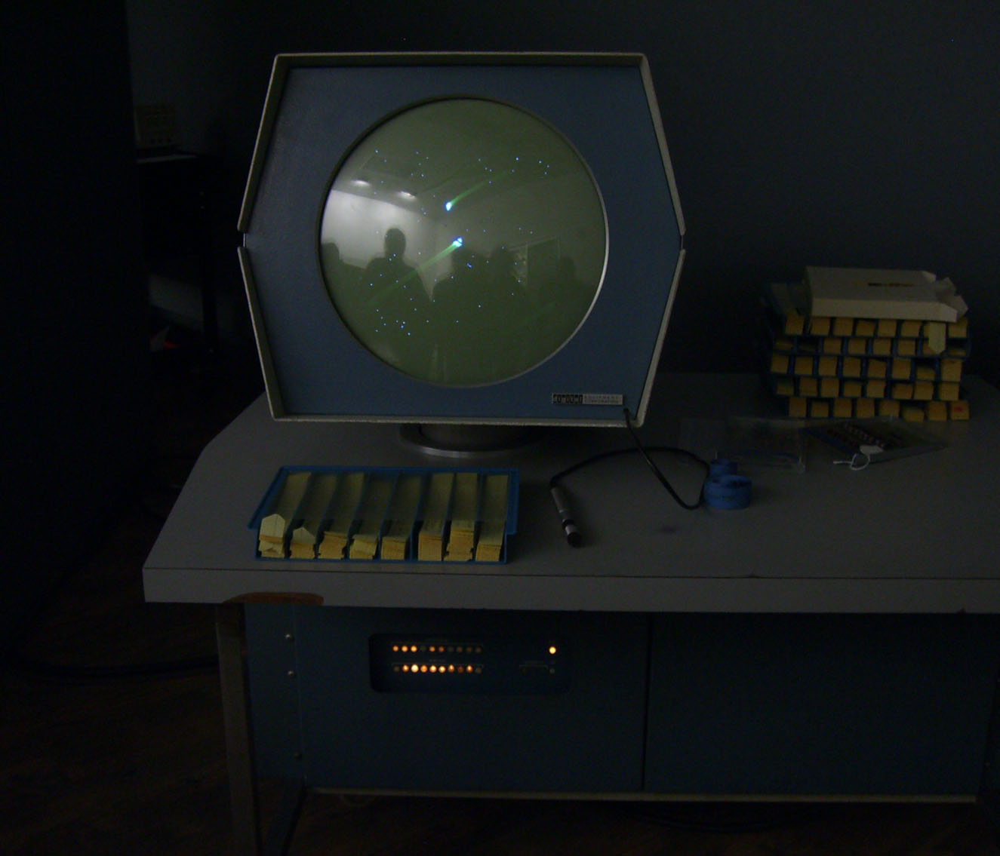

1947 : Le dispositif de divertissement à tube cathodique est un jeu vidéo interactif, inventé en 1947 par les physiciens Thomas T. Goldsmith Jr. et Estle Ray Mann. Il simule un tir de canon sur une cible dessinée sur un film plastique placé sur l'écran d'un oscilloscope. Les joueurs peuvent contrôler la trajectoire de tir grâce à des boutons et des interrupteurs. Grâce au tube cathodique, la trajectoire de tir sera incurvée. Les experts le considèrent comme le plus ancien jeu électronique connu et le premier jeu avec des capacités graphiques avec un affichage électronique. Par conséquent, il est considéré comme un pionnier dans l'origine et l'histoire des jeux vidéo.

1962 : Spacewar!, Développé par le MIT, est le premier jeu à contrôler un objet représentant le joueur à l'écran, et est le premier à tirer. En effet, Spacewar est un shoot'em up dans lequel deux vaisseaux participent à un combat spatial. Spacewar est déployé sur la plupart des dizaines de PDP-1 utilisés à des fins académiques, ce qui en fait le premier jeu à être joué sur plusieurs ordinateurs. Le jeu est initialement contrôlé par des commutateurs à levier et un bouton situé sur le panneau avant de l'ordinateur, mais Alan Kotok et Bob Saunders construisent ce qui est considéré comme la première manette de jeu dans le but d'améliorer l'expérience de jeu. C'est l'un des jeux les plus importants et les plus influents dans la genèse des jeux vidéo, et inspirera de nombreux jeux vidéo à venir.
Images of the PDP-1 at the Computer History Museum in Mountain View, California
Naissance de l'industrie videoludique en 1972
Pong est un des premiers jeux vidéo d'arcade et un des premiers jeux vidéo d'arcade sportifs. Il a été imaginé par l'Américain Nolan Bushnell et développé par Allan Alcorn, et Atari a commencé à le vendre en novembre 1972. Le joueur peut changer la direction de la balle en fonction de l'endroit où la balle frappe la raquette, car sa vitesse augmente progressivement au cours du tour. On y retorouve un affichage du score du jeu en cours et il y a un effet sonore lorsque vous frappez la balle sur la raquette. Ralph Baer avait précédemment créé une version similaire pour la console de jeu Odyssey de Magnavox, mais on en sait peu sur son existence.
1978 : Space Invaders スペースインベーダー (Supēsu Inbēdā?) est un jeu vidéo développé par la société japonaise Taito, sorti en 1978 sur borne d'arcade.Considéré comme le premier archétype du shoot them up,
il est aussi l'un des titres les plus influents et célèbres de l'histoire du jeu vidéo. Il fait partie des classiques du jeu vidéo au même titre que Pac-Man et d'autres.Après sa sortie au Japon,
il aurait entraîné une pénurie de pièces de 100 yens.
Gameplay by: Velberan
Liste des differentes avancées durant les années 70:
1971: Galaxy Game est le premier jeu vidéo requérant des pièces de monnaie pour fonctionner.
1972: L'Odyssey est la première console de jeux vidéo commercialisée.
1973: Space Race d'Atari est le premier jeu de course publié. Il s'agit d'un jeu d'arcade.
1974: dnd est le premiers rogue-like et un précurseur des RPG.
1976: Breakout d'Atari est le premier casse-brique.
1977: Sortie de l'Atari VCS, connu par la suite sous le nom d'Atari 2600. La console leader de sa génération avec 30 millions d'unités vendues.
Annees 1980 Intro
Le jeu a connu un grand succès aux États-Unis et au Japon et reste considéré comme un classique de l'histoire du jeu vidéo. Au début des années 1980, les jeux vidéo étaient principalement joués sur des bornes d'arcades. Les consoles individuelles, peu répandues, ne supportent qu'un nombre limité de jeux, souvent mal adaptés à partir de ces bornes. Pac-Man est sorti sur les bornes d'arcades en 1980 et est devenu le jeu le plus populaire du moment. Space Invaders est la plus grosse vente de l'année pour l'Atari 2600. Nintendo lance un jeu électronique portable avec un écran à cristaux liquides, Game and Watch, l'ancêtre des consoles portables. Cependant, des icônes de jeux vidéo verront le jour durant cette période. Désormais, le marché des consoles de jeux redémarrera avec des jeux spécialement conçus pour eux, grâce à Nintendo et Super Mario Bros. en 1985, une distinction est systématiquement faite entre les jeux sur console et sur ordinateur.